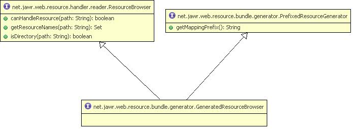

Please make sure to read the Jawr Generators documentation before this page.
In the Jawr Generators documentation, we have seen how to implement a basic generator.
Here we will see advanced features about the generators.
In the Jawr configuration file, we only define the class name of the generator.
Jawr provides some interfaces to initialize the generator.
In the class diagram above, we can see that there are 3 main interfaces for generator initialization.
public void setConfig(JawrConfig config);
For example : For a resource generator which is able to handle Javascript files and CSS files.
If the type is "js" then the debugModePath will be "/jawr_generator.js"
else if the type is "css" the debugModePath will be "/jawr_generator.css"
public void setResourceType(String resourceType);
public void afterPropertiesSet();
Jawr allows you to create generators, which can create resources depending on the user locale.
There is one locale aware generator, which is already provided In Jawr, and which handles i18n message resources :
So Jawr provides a mechanism to define a generator which can generate resources with locale specific variants.
You will find below the class diagram for the locale aware resource generator.
public List getAvailableLocales(String mapping);
For example, if you have 3 differents locale variant for a CSS stylesheet like:
general.css, general_fr.css, general_en.css
Your generator must return a list of String corresponding to the available locale variants, in our case : ("", "fr", "en")
As for every resource, Jawr allows you to create a generator for the CSS files.
One of the particularity of the CSS resources, is that they have references to images.
With Jawr, you are free to define a CSS Resource generator, which is also an Image Resource generator. If your CSS generator is able to handle generated image resources, it must implements net.jawr.web.resource.bundle.generator.StreamResourceGenerator
For example, you can have a CSS resource which is defined in the classpath. This CSS can have references to images which are also retrieved from the classpath.
So here you define that your CSS resource generator will also handle CSS images.
All references to images will be handled by the CSS resource generator.
You will find below the class diagram for Css Resource Generator [../images/generator/jawr_cssGenerator.png] CSS Generator class diagram
public boolean isHandlingCssImage();
This method must return true if the CSS image defined in the generated CSS resource are handled by the CSS generator.
For example, If myCssGen is the prefix of the resource generator, all CSS image which are defined in the CSS resources, will be prefixed by myCssGen.
If in the generated CSS resource, a CSS image is referenced as
background-image : url('/myImg/temp/myIcon.png')
Then, the image path will be interpreted as :
background-image : url('myGen:/myImg/temp/myIcon.png')
Important note : If your generator handle CSS resources, you are not forced to implement the net.jawr.web.resource.bundle.generator.CssResourceGenerator interface. You will need implement it only if your CSS generator is able to handle CSS images.
There are three ways to map resources:
For example:
jawr.js.bundle.myBundle.id=/bundles/myBundle.js
jawr.js.bundle.myBundle.mappings=/js/one.js,/js/tabview/**
In the above example, we have referenced the resource /js/on.js directly, and we have also put all js files available under /js/tabview/ folder.
With the resource generator, you can achieve the same behaviours. By default, the resource generator is only able to handle the direct reference to a resource path, like in the example below :
jawr.js.bundle.myBundle.id=/bundles/myBundle.js
jawr.js.bundle.myBundle.mappings=myGen:/js/one.js
If you want to use the directory syntax for generated resource, your generator must implement the interface net.jawr.web.resource.handler.reader.ResourceBrowser, like the GeneratedResourceBrowser interface defined below.
public Set getResourceNames(String path);
This method returns a list of resources at a specified path within the resources directory.
public boolean isDirectory(String path);
Determines wether a given path is a directory.
Jawr allows you to reference bundled resources deployed in a content delivery network (CDN).
To achieve this, you need to use the properties jawr.url.contextpath.override and jawr.url.contextpath.ssl.override.
Even in debug mode, Jawr allows you to reference resources in a CDN using the property jawr.url.contextpath.override.used.in.debug.mode.
Jawr helps you to create the resources and the structure of the files to put in your CDN using the build time processing feature.
When using the build time processing feature allows you to define the path used for storing the generated resources.
To define the path of a generated resource in debug mode, the generator must implement a specific interface.
This interface is implemented by the resource generators which are able to define a specific path for the debug mode in the build time bundle processing.
public String getDebugModeBuildTimeGenerationPath(String parameter);
This methods must return the path to use when creating a generated resource in debug mode during the build time bundle processing.